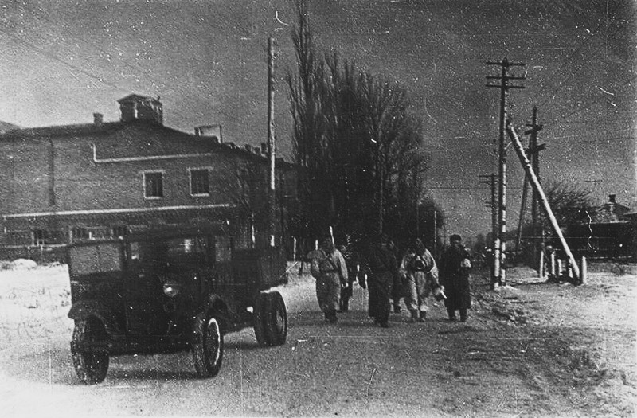

Мозырь в годы оккупации
Введение
В историю Великой Отечественной Войны советского народа и немецко-фашистских захватчиков Мозырщина вписала свою яркую страничку. После присоединения Западной Беларуси к БССР Полесская область перестала быть пограничной. Но уже на шестой день война дошла до её границы. На территории области бои шли уже с 28 июня 1941 года. Два месяца на прифронтовой полосе находился областной центр Полесья - город Мозырь. Крайне тяжелое положение на фронте требовало новых человеческих ресурсов, поэтому своевременно была проведена мобилизация в армию. Так, следуя Информационному письму №2 секретаря Мозырского райкома КП(б)Б в ЦК и Полесский Обком КП(б)Б о прохождении мобилизации в Красную Армию по району от 24 июля 1941г.
Данные о войсках
Необходимо было призвать 788 чел., удалось призвать 701 чел., а 87 чел. не явились по причине того, что они в день мобилизации находились на спец.строительстве в г. Минске, Калинковичах, а также часть из них ранее призвана в РККА на сборы. В числе мобилизованных было призвано 20 коммунистов, которые активно проводили политмассовую работу среди призываемых. Также необходимо было направить в РККА 253 лошади, но доставлено только 223, в связи с тем, что часть лошадей для артиллерии не подошла по стандарту. Для выполнения наряда были присланы другие лошади. Необходимо было предоставить 124 повозки, было предоставлено 108. Парторганизация района проводила большую политмассовую работу среди населения, тем самым организуя его на поднятие политической бдительности, охрану социалистического имущества, на укрепление дисциплины и увеличения продуктивности труда на социалистических полях. [2] Городские предприятия начали работать для обороны. Был сформирован и начал свою деятельность истребительный батальон. На укомплектование командного и политического состава 75-й стрелковой дивизии была выделена группа партийных и советских работников города и области. Более 400 человек вошло в состав 3-й армии генерала В.И.Кузнецова, части которой, выходя из окружения, заново формировались в районе Мозыря. Партийные, советские, комсомольские организации Полесской области приступили к организации специальных отрядов, которые потом были переименованы в истребительные батальоны. Они создавались в городах и райцентрах, в сельсоветах области. Они следили за местами возможной высадки диверсантов и шпионов, охраняли железнодорожные узлы, станции и другие важные объекты, вели разведку на фронте и в тылу противника, принимали участие в оборонительных боях Красной Армии. Исходя из информационного письма секретаря Полесского обкома КП(б)Б П. А. Левицкого об организации деятельности истребительных батальонов в области от 8 июля 1941г., В г. Мозыре истребительный батальон состоял из 300 человек, А в районе от 200 до 300 чел. В связи с всеобщей мобилизацией значительная часть бойцов батальона была призвана в Красную Армию. По состоянию на 8 июля, в г. Мозыре в батальоне осталось 120 человек, в районах области осталось 1276 человек, из них 1249 мужчин и 27 женщин. Также на вооружении истребительных батальонов и работников НКВД области имелось 974 винтовки, 3 станковых и 4 ручных пулемета. Пулеметами были вооружены батальоны г. Мозыря, Туровского района, Октябрьского и Домановичского районов Практически одновременно с формированием истребительных батальонов в городах и районах формировалось народное ополчение. В него шли люди, которые по разным причинам не подлежали службе в армии. В Мозыре к июлю 1941 года было сформировано 7 отрядов народного ополчения, количеством до 238 человек, позже на базе этих ополчений формировались и партизанские отряды. Мирное население было мобилизовано для строительства линии обороны на реках Припять и Птичь. Было построено несколько узлов обороны с противотанковыми рвами. На мозырщине и других районах Полесья действовали кавалерийские группы советских войск. На подступах к городу вели ожесточенные бои 75-я стрелковая дивизия генерала С.И. Недвигина и частей Мозырского укрепрайона. Нежелание гитлеровских стратегов развернуть широкое наступление в направлении Пинских болот, а также боевые действия советских войск, упёртое, героическое сопротивление позволило местным партийным и советским органам Гомельской и Полесской областей на протяжении двух месяцев использовать все людские и материальные ресурсы для укрепления фронта, эвакуации на запад людей, предприятий и колхозно-кооперативной собственности.
Перестройка промышленности
Крайне тяжёлое положение, которое сложилось в первые дни войны, требовало немедленной перестройки промышленности, транспорта сельского хозяйства на военное направление. Мозырская артель “Молот” за несколько дней освоила выпуск корпусов для гранат. Все швейные фабрики мастерские перешли на пошив военного обмундирования и амуниции, а хлебозаводы-к выпечке галет. Все автомастерские Мозыря перешли к ремонту фронтовых машин. На предприятиях города значительно возросла продуктивность работы. Комсомольцы фабрики “Профинтерн” Михаил Глега, Марьян Винцуковский и другие выполняли дневной рабочий план на 200%. Ситуация на фронте ухудшалась с каждым днём, и в июле 1941 года началась эвакуация населения и материальных ценностей во все западные районы страны. Мозырские фанерные заводы “Красный Октябрь” и ”Звезда”, мебельная фабрика “Профинтрерн”, лесозавод “Пролетарский” были вывезены в Архангельскую, Орловскую и другие области. Всего с территории города было эвакуировано 14 предприятий. Из колхозов вывезено своим ходом 66% рогатого скота, 77% овец, 15% свиней.
Немецко-фашистский режим
Массовый ратный и трудовой подвиг мозырян получил развитие в борьбе с немецко-фашистскими оккупантами в партизанских отрядах в патриотичном подполье. Но перевес сил был на стороне немецких войск. Красная Армия 22 августа 1941 покинула последний пока еще не захваченный врагом областной центр Беларуси - Мозырь. Оккупировав всё Полесье, Мозырь и район, гитлеровцы, следуя ранее разработанному плану “Ост”, начали устанавливать “новый порядок” на этих территориях (г. Мозырь и прилежащий район входил в Мозырский округ, который подчинялся житомирскому гебитскомиссариату). Создавались карательные отряды и местные органы власти: в городах - бургомистры, а в деревнях - старосты, также создавались полицейские участки, лагери, гетто. В первую очередь убивали коммунистов, комсомольцев, советских работников, колхозных активистов, полному уничтожению подлежало еврейское и цыганское население (массовые расстрелы евреев на территории Мозыря начались с 1942г.); остальная часть людей на оккупированных территориях должна была использоваться в качестве бесплатной рабочей силы, доноров и т.д. Население Мозыря жило, как в концлагере. Фашисты обмотали город колючей проволокой и никого не выпускали. В магазинах ничего не осталось. Нельзя было купить даже солонку соли, кусочка хлеба. Нависала угроза голодной смерти. Люди бы ходили в лес по грибы и ягоды, но немецкие патрульные застрелят, как только приблизишься к границе города. Однако ничто не могло остановить людей чтобы бежать из города, что похож на тюремный застенок. Каждый день немцы заставляли взрослых людей ходить на регистрацию. Утром человек зарегистрировался, а к вечеру его и след простыл. Темный бор и лесные заросли с радостью принимали всех, кто идет в партизаны. [5] С ростом сопротивления захватчикам усилились и репрессии, расстреливали мирное население, женщин, детей, стариков. Так, кровавую расправу над жителями Суражского района немецкие офицеры назвали “Неделей истребления партизан”. Гитлеровские головорезы пустили против мирного населения танки, броневики и самолеты. Они жгли деревни, больницы, вырезали целые семьи, закапывали живых детей в землю. Как липку, ободрали людей немецкие оккупанты. Они забрали у населения 377 коров, 1599 овец, 183 коня, 125 свиней, забрали одежду, обувь. Людей сгоняли на каторги. Но самое страшное – это убийства невинных людей. Только за 4 дня оккупации города расстреляли и повесили 124 человека, иногда людей загоняли в дома или хаты и сжигали заживо. [5] Начиная с 22 марта 1943г. Было расстреляно 358 человек, сожжено 76 домов. В кровавых расправах участвовала абверкоманда 10-СА и мозырская полиция. В Мозырском районе погибло 1770 человек, а в самом Мозыре за время оккупации гитлеровцы и их “помощники” убили и закатали более 5500 человек. Близлежащие деревни сжигались вместе с жителями. Полностью и частично были уничтожены 42 населенных пункта. Все еврейское население города, главным образом женщины, дети и старики осенью 1941 года были собраны в “гетто” по ул. Ромашов Ров, где затем были расстреляны или потоплены в реке. Но не смотря на такие сложные условия в активную борьбу с фашистским режимом включилось и Мозырское подполье.
Подпольно-партизанское движение
Патриотичное подполье областного центра Мозыря включало в себя членов разведгрупп, созданных по заданию партийных органов и управления НКУС Полесской области для деятельности в тылу врага. Существовали и подпольные организации, состоящие из коммунистов, комсомольцев и военнослужащих Красной Армии, что попали в окружение. Ещё до прихода гитлеровцев на территории Мозыря действовало 7 подпольных отрядов по 3 – 5 человек в каждом, ими руководили М. Ю. Моисеев, Ф. Г. Беленький, М. Я. Рудницкий, Я. Р. Новосёлова, К. Р. Ткач, В. И. Крицкий. Для руководства всеми этими группами был назначен оперативный работник национальной безопасности А. П. Поляков (псевдоним П. А. Примаков). Подпольщики работали в специально подобранных конспиративных квартирах. Некоторые подпольщики работали самостоятельно, с ними планировалось наладить связь чуть позже (это были специально обученные подпольщики, которые направлялись в город из самого ЦК КП(б)Б, как, например, Тимофей Абрамов). 25 марта 1943 г. Был сформирован Мозырский подпольный РК КП(б)Б (секретарь М. К. Ильинковский) эти и другие подпольные отряды занимались разведкой и агитацией мирного населения в подполье, позже многие перешли к партизанам. Для управления партизанским движением на территории г. Мозыря и Мозырского района был назначен секретарь райкома партии М. И. Марков. Позже на базе истребительных батальонов стали формироваться партизанские отряды, так был создан партизанский отряд под командованием М. И. Макаренко, личным составом около 50 человек. Такие отряды создавались повсеместно, обычно в них входило от 50 до 200 человек, где половина отряда была вооружена винтовками и автоматами. Прочитав Постановление Полесского обкома КП(б)Б об организации борьбы в тылу германских войск от 23 июля 1941 г., мы можем увидеть, что центральные органы управления уделяли особое внимание организации партизанских отрядов и их обеспечению, а именно нужно было поручить председателю облисполкома тов. Зайцеву выделить необходимое количество денег, одежды, продовольствия и радиоприемников для партизанских отрядов и подпольных парторганизаций. А также предложить начальнику УНКВД тов. Строкину и первым секретарям РК КП(б) подготовить переход истребительных батальонов в партизанские отряды, причем руководствоваться принципом строгого индивидуального отбора каждого бойца, посылаемого в партизанские отряды.[4] Партизанские отряды выводили из строя электростанции, взрывали мосты, железную дорогу, автомашины, пускали под откос поезда, выводили из строя телефонную связь, вели политическую агитацию среди мирного населения, выслеживали и убивали предателей родины, немцев. Однако многие партизанские и подпольные отряды были уничтожены: народным мстителям не хватало оружия и опыта, катастрофически не хватало боеприпасов, а с наступлением зимы, и еды с одеждой, не во всех отрядах были радиостанции. В городе были созданы карательные и контрразведывательные отряды, которые позднее принимали массовое участие в выслеживании и расстрелах партизан и подпольщиков. Были введены репрессии, где за каждого убитого немецкого солдата расстреливалось мирное население. Однако мирное население безвозмездно помогало партизанам: отдавали обувь, еду, одежду, деньги. Жизнь этих людей могла оборваться в любой момент.
Освобождение Гомельской области
Осенью 1943 г. началось освобождение Гомельской и Полесской областей и гитлеровское командование уже не придавало такого большого значения Мозырю – опорному пункту на р. Припяти. Здесь планировалась перегруппировка немецких дивизий. Для того чтобы обезопасить свой тыл немцы начали карательные операции. Некоторые партизанские отряды были уничтожены в тот же день. 30 декабря 1943 г. против партизан из деревни Слобода выступил отряд СС из 150 человек. Командир отряда А. Д. Колос устроил засаду и потеряв 20 человек убитыми, был вынужден отступить. Для того чтобы помочь Красной Армии в наступлении, командование Мозырской бригады А.Л. Жильский предоставил свои разведданные, и, вместе с командованием наступающих войск, участвовал в разработке обходного маневра на г. Мозырь. Военный совет 61-й армии после анализа разведданных принял решение – при помощи партизан двум кавалерийским корпусам незаметно просочиться в тыл врага и вместе с партизанами освободить город от оккупантов. Калинковичско-Мозырская наступательная операция советских войск явилась важной частью стратегического плана Верховного Главнокомандования. Осуществлялась она с 8 января по 8 февраля 1944 г. войсками левого крыла 1-го Белорусского фронта (командующий – генерал армии К.К.Рокоссовский) в составе двух армий – 65-й (командующий – генерал-лейтенант П.И.Батов) и 61-й (командующий – генерал-лейтенант П.А.Белов). 8 января 1944 г. два отряда Мозырской партизанской бригады имени Александра Невского соединились в деревне Иваньковщина с частями 7-го гвардейского кавалерийского корпуса. 3-ий отряд бригады соединился с частями 2-го кавалерийского гвардейского корпуса. 2-ой отряд бригады совместно с частями 16-го гвардейской кавалерийской дивизии под командованием Р. А. Белова принимал участие в освобождении в освобождении Мозыря, близлежащих деревень и населенныхпунктов. 11 января войска Красной Армии перешли в наступление на Мозырском направлении и за два дня тяжелых боев прорвали оборону немецкого укрепрайона на 30 километров по протяженности фронта и на 15 километров в глубину. За 13 января 1944 г. Войска Белорусского фронта под командованием Рокоссовского заняли более 40 населенных пунктов и подошли к областному центру Белорусской ССР города Мозырь. Войска Красной Армии подбили и уничтожили в общей сложности 89 немецких танков, а также 102 самолета.
Освобождение г.Мозыря
14 января 1944 года форсировал р. Припять и освободил г. Мозырь, деревни Слобода, Слободка, Хомички, Борисковичи и Прудок от немецко-фашистских захватчиков. Войска Белорусского фронта в ходе умелого обходного маневра 14 января 1944 г. штурмом овладели областным центром Беларуси городом Мозырь, а также железнодорожным узлом городом Калинковичи – важными опорными пунктами немецкой армии на Полесском направлении. В ознаменование победы соединившиеся отряды и части, которые участвовали в освобождении города наградили орденами. В 21 час по московскому времени в Москве был салют в честь доблестных солдат, которые освободили Мозырь, двадцатью залпами из 224 пушек.[7] В день освобождения из 18,5 тыс. жителей довоенного города в нем оставались 4700 человек. Материальный ущерб, который понес Мозырь за годы гитлеровской оккупации, оценивался в 118322071 рубль в ценах 1944-1945 гг. За активную помощь воинским частям в боях за освобождение Мозыря и района Мозырской партизанской бригаде имени Александра Невского командующий 61-ой армией генерал-лейтенант П. А. Белов объявил благодарность. На момент соединения с 61-ой армией партизанская бригада насчитывала более 500 человек. 20 января 1944 г. бригада была расформирована и присоединилась к 61-ой армии. Начались восстановительные работы и выход комсомольцев из подполья.
Заключенние
Всего за время оккупации расстрелянных, замученных граждан - 5530 человек, из них расстреляно - 4730 человек. Часть расстрелянных зарывалось в землю живыми, в овраге на пути из г. Мозыря в д. Бобры - 2 могилы, где зарыто 1000 человек, в конце ул. Свидовка – 2 могилы, где 600 человек, в урочище Ромашов Ров в овраге – 4 могилы и 850 человек, на еврейском кладбище-18 могил, где в каждой от 50 до 55 человек, на ул. Пушкина – 5 могил, и 275 человек. Было извлечено и перезахоронено 4032 трупа. Таким образом, г. Мозырь оказался в непростом положении прифронтового города, который вскоре эвакуировали и оставили в оборонительных боях. Однако благодаря мужественному и бессмертному подвигу советского народа и Красной Армии город был освобожден и восстановлен, все эвакуированные предприятия продолжили свою деятельность в послевоенное время, а память о подвиге Красной Армии увековечена в Братской могиле и мемориалом с вечным огнём и стелой.